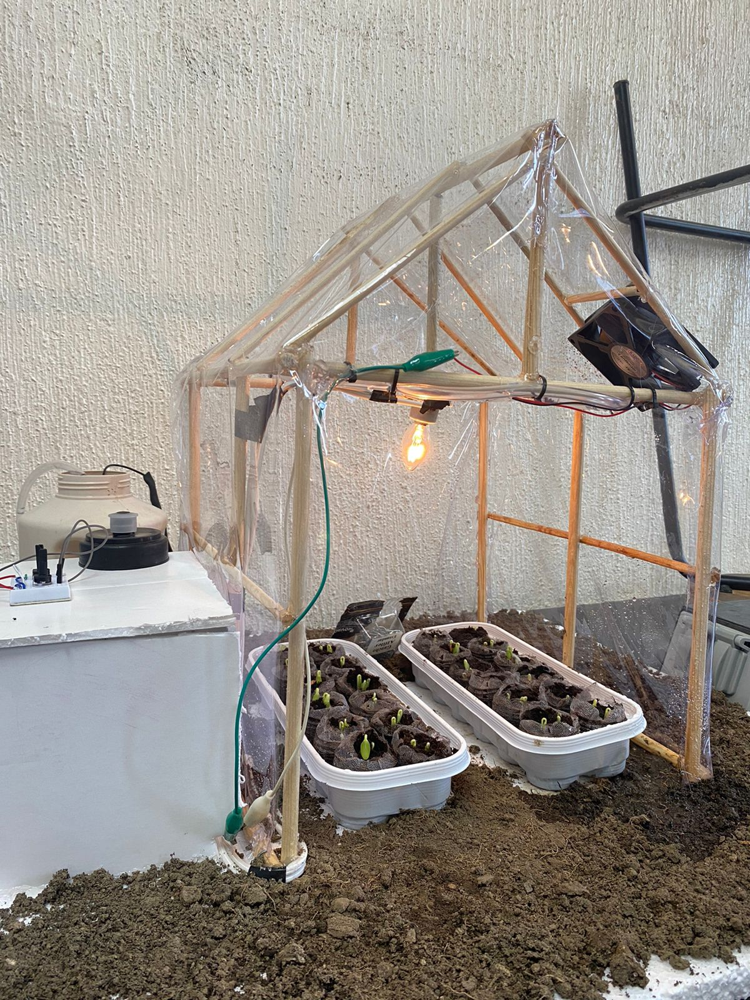

¡Hello! I'm Diego Paredes, a Mechatronics Engineering student with a keen interest in the Industry 4.0 landscape. Equipped with a robust background in various courses, workshops, and practical experiences related to cutting-edge technologies within engineering. A person with a strong emphasis on responsibility, leadership, adaptability, integrity-driven, and continuous improvement.
Our project entailed the development of an automated greenhouse model using Raspberry Pi, Python, and sensors. We engineered a control system to maintain optimal humidity and temperature conditions. Moreover, we crafted a user-friendly graphical interface providing real-time data feedback and enabling seamless actuator control.
Email: diego19paredes21@gmail.com
Phone: +52 669 913 6264